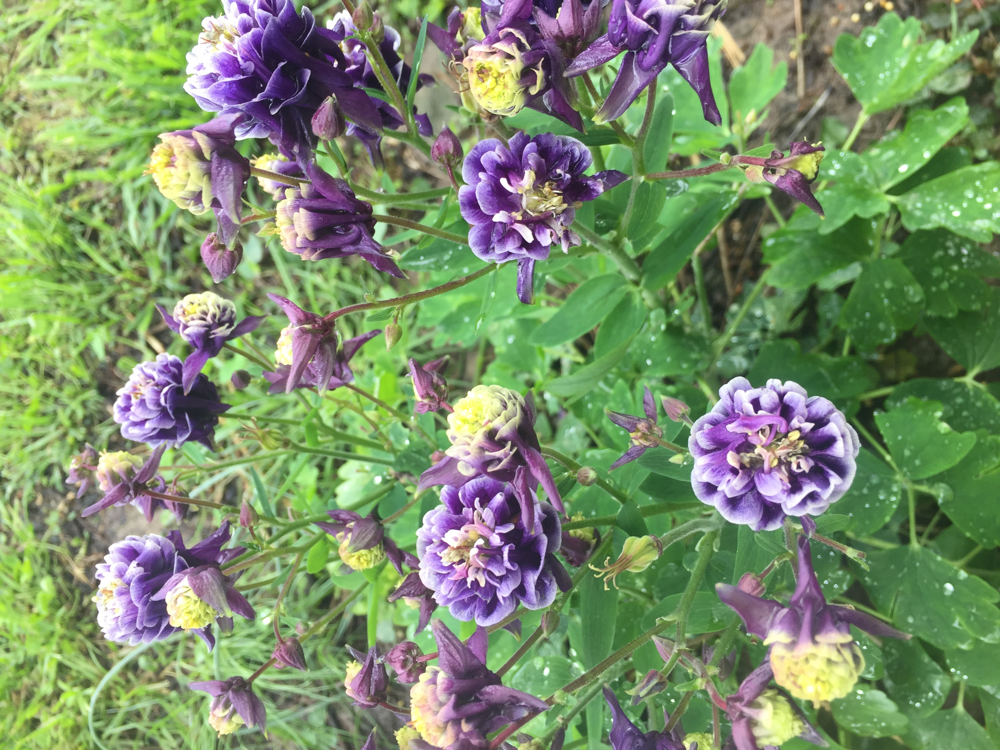

Hobbies

Art
I received my Bachelor of Fine Arts degree from Pittsburg State
University where I studied ceramics. I also completed part of a
Master of Arts degree with a focus on jewelry and metalsmithing. I
enjoy doing ceramics, metal work and jewelry, as well as drawing and painting.

Gardening
I enjoy plants and flowers both in and outside of my home.
While I don't love to grow a huge garden, I enjoy growing a few of
my favorite fruits and vegetables and I love to grow all types of ornamental
plants and flowers.

Birds and Butterflies
I have a love of birds and Butterflies. I have a pet parakeet named Skittles.
I also feed and enjoy hummingbirds each summer. My daughters love caterpillars
and butterflies, so we raise caterpillars and then release the butterflies together.
Fundamentals

Faith
Motherhood and Family
I am a mother of 3 children. Nellie was born in 2012, Olivia
was born in 2013, and my youngest and only son, Afton, was born in 2020. I was blessed to stay home to care for
my children until school age. Now I am excited to begin my new career in software or web development.
Higher Education
I recently completed my second bachelor's degree in Computer Science from Bellevue University.
I earned my first bachelor’s degree in Fine Art from Pittsburg State University in 2006.
I also have graduate credits toward a Master of Arts degree.